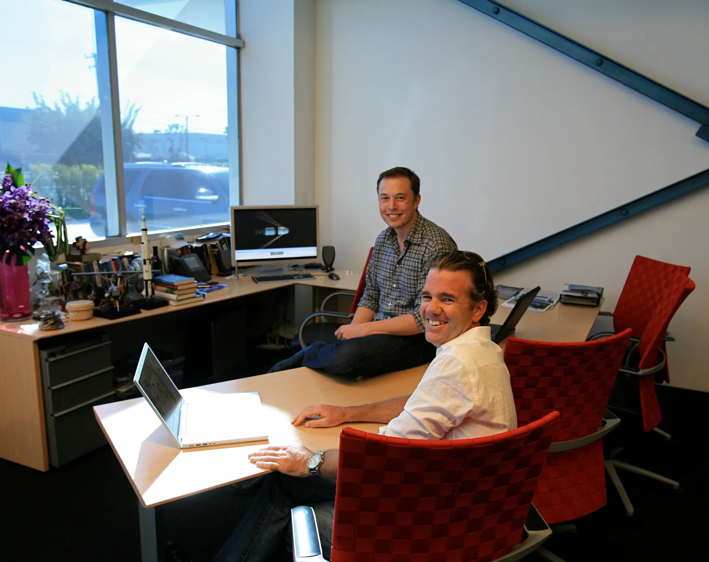
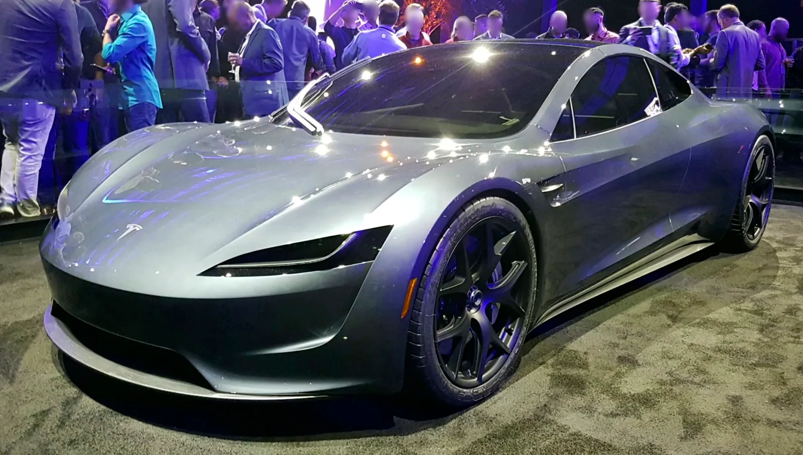

▲ 2017년 11월 공개 행사에서 최초로 모습을 드러낸 테슬라 로드스터 프로토타입. 이후 거의 10년째 정식 출시가 미뤄지고 있다
테슬라 수석 디자이너 프란츠 폰 홀츠하우젠이 제이 레노가 진행하는 자동차 프로그램에 출연해, 신형 로드스터가 "매우 곧(very soon)" 출시될 것이라고 밝혔습니다. 레노가 재차 확인 질문을 던졌을 때도 그는 같은 답변을 반복했습니다. 하지만 이 발언을 접한 자동차 업계의 반응은 냉소에 가깝습니다. 벌써 거의 10년째 반복돼온 "곧 나온다"는 약속이기 때문입니다.
1. 거의 10년째 반복되는 "곧 나온다"
신형 로드스터의 지연 역사는 꽤 깁니다. 2017년 11월 세미트럭 공개 행사에서 깜짝 등장하며 2020년 생산을 약속했지만, 이후 일정은 2022년, 2023년, 2024년으로 계속 미뤄졌습니다. 2024년 2월에는 연말 공개와 2025년 초 고객 인도를 약속했지만 이 역시 지켜지지 않았습니다. 2026년 4월 1일로 예고됐던 데모 행사는 5~6월로 한 차례 밀렸다가, 스페이스X와 협업 중인 냉각가스 추진기 시스템 개발이 늦어지면서 다시 8월 이후로 재차 연기됐습니다. 이런 반복된 지연 끝에, 업계에서는 실제 양산 시점을 2027~2028년으로 보는 시각이 우세합니다.

▲ 테슬라 수석 디자이너 프란츠 폰 홀츠하우젠(왼쪽)과 일론 머스크. 홀츠하우젠은 이번에도 로드스터가 "매우 곧" 나온다고 밝혔다
2. 약속된 스펙 — 여전히 유효할까
최초 공개 당시 테슬라가 제시한 스펙은 파격적이었습니다. 시작가 20만 달러에 정지 상태에서 시속 60마일까지 1.9초, 최고속도 시속 250마일, 1회 충전 주행거리 620마일이라는 수치가 제시됐습니다. 문제는 이 스펙이 발표된 지 벌써 여러 해가 지났다는 점입니다. 그 사이 경쟁사들의 전기 스포츠카 기술도 크게 발전한 만큼, 실제 양산 시점에 이 스펙이 그대로 유지될지, 혹은 상향 조정될지는 불투명합니다. 테슬라 측에서 최근 이 수치를 재확인하거나 갱신했다는 공식 발표는 없는 상태입니다.
| 시점 | 내용 |
|---|---|
| 2017년 11월 | 프로토타입 최초 공개, 2020년 생산 약속 |
| 2022~2024년 | 생산 목표 연속 연기 |
| 2024년 2월 | 연말 공개, 2025년 초 인도 약속 |
| 2026년 4월 예정 | 데모 행사 예고 → 5~6월로 1차 연기 |
| 2026년 6월 | 스페이스X 추진기 개발 지연 → 8월 이후로 재연기 |
| 2026년 8월 | "매우 곧" 출시 재예고 |
| 업계 예상 | 실제 양산 2027~2028년 |

▲ 테슬라의 현재 주력 모델인 모델Y. 로드스터가 계속 지연되는 사이, 테슬라의 자원은 모델Y·모델3 등 양산 차종과 로보택시, 사이버트럭 등에 우선 투입돼 왔다
3. 왜 이렇게까지 늦어지나
로드스터가 이렇게까지 지연되는 배경에는 테슬라의 우선순위 문제가 자리하고 있다는 분석이 많습니다. 그동안 테슬라는 사이버트럭 양산, 로보택시 및 자율주행 기술 개발, 모델Y·모델3 등 볼륨 모델의 생산 확대에 자원을 집중해왔습니다. 소량 생산될 것으로 예상되는 니치 스포츠카인 로드스터는, 상대적으로 우선순위에서 계속 밀려온 것으로 보입니다. 여기에 1.9초라는 파격적인 가속 성능을 실제로 구현하기 위한 기술적 난이도도 개발 기간이 길어지는 요인 중 하나로 거론됩니다.

▲ 2017년 공개 당시의 로드스터 프로토타입. 1.9초 가속과 620마일 주행거리라는 약속이 지금까지 유효한지는 불투명하다
4. 로켓 추진기까지 — '스페이스X 패키지'의 정체
로드스터 지연의 또 다른 배경에는 '스페이스X 패키지'라는 극단적인 옵션이 있습니다. 일론 머스크는 2017년 공개 당시부터 스페이스X의 로켓 기술을 응용해 차량을 더 빠르게 만들겠다고 예고했는데, 구체적으로는 뒷좌석 자리에 냉각가스 로켓 추진기 약 10개를 장착해 코너링·제동·가속 성능을 끌어올리는 방식입니다. 이 옵션을 장착하면 0-60마일 가속이 1.1초까지 단축된다는 것이 머스크의 주장입니다. 2026년 4월 말 테슬라와 스페이스X 엔지니어들이 이 시스템("A71")의 초기 시연을 머스크에게 선보인 것으로 알려졌지만, 실제 완성까지는 추가 개발이 필요한 상황이며 이것이 최근 데모 일정이 거듭 밀린 핵심 원인으로 지목됩니다.
5. 정리 — 이번엔 믿어도 될까
제이 레노조차 "거의 10년이 다 되어간다"며 직접 회의감을 드러낸 이번 인터뷰는, 신형 로드스터를 둘러싼 팬들의 복잡한 심경을 잘 보여줍니다. 프란츠 폰 홀츠하우젠의 이번 발언이 실제 출시로 이어질지, 아니면 또 하나의 지연된 약속으로 남을지는 조금 더 지켜봐야 할 것 같습니다. 다만 반복된 연기에도 불구하고, 1.9초 가속과 620마일 주행거리라는 파격적인 스펙에 대한 기대감만큼은 여전히 식지 않고 있습니다.